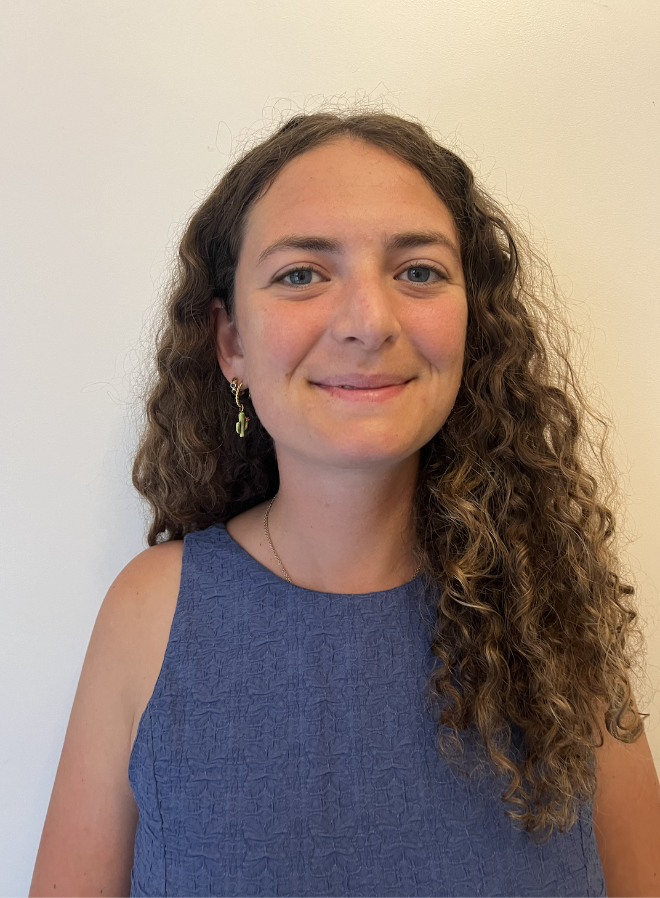

PhD Candidate | Applied Economist
Raphaelle Aulagnon
I'm a PhD candidate in Economics at Bocconi University, specializing in designing and evaluating technology-driven interventions in education and labor markets.
My work combines causal inference, experimental methods, discrete-choice models, and machine learning. I use Python and R to analyze large-scale field experiments and administrative data.
💼 Current
Consulting with World Bank on AI and labor markets
Field research on educational technology with GRADE Peru and IDB
Field research on educational technology with GRADE Peru and IDB
🔗 Affiliated
📚 Previously
Visiting Research Fellow at Harvard CID (2024)
Visiting Research Fellow at UChicago John List team (2025)
Research Assistant to Philippe Aghion (2020)
Research Associate at Good Business Lab (2019)
Visiting Research Fellow at UChicago John List team (2025)
Research Assistant to Philippe Aghion (2020)
Research Associate at Good Business Lab (2019)

Get in Touch
💼
LinkedIn
linkedin.com/in/raphaelle-aulagnon